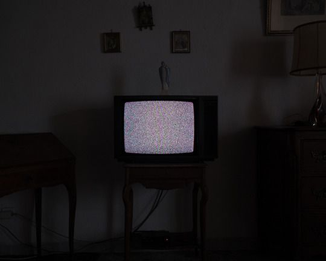

Música

Hoje não aconteceu absolutamente nada.
Sabe quando tudo parece estar em silêncio demais? Um silêncio que não é exatamente paz, mas uma ausência mórbida de vida. Foi esse o clima. A cidade, que normalmente pulsa mesmo nas horas mortas, hoje parecia uma maquete abandonada. Bares fechados, ruas vazias, nenhum som de risada bêbada ecoando pelos becos. Até meus amigos pareciam desaparecidos. Nenhuma mensagem, nenhum “e aí”. Nada.
Pode ser que eu esteja só surtando de novo, mas o dia de hoje teve aquele gosto amargo de mundo vazio.
E é estranho pra caralho, porque o vazio externo se alinha com o de dentro. É como um espelho estranho, em que o mundo lá fora acompanha o meu humor sem me perguntar se era isso que eu queria. Me sinto cercada por paredes que não protegem, apenas refletem o eco de uma solidão que não pedi.
Olho para a janela coberta por gotas, enquanto a névoa e o céu acinzentado compõem uma sinfonia melancólica de cinza. Há algo sufocante nesse tipo de calma, tornando o ar pesado demais para respirar sem esforço.
Fecho os olhos, tentando me ouvir, talvez reorganizar os pensamentos que vivem fugindo de mim. Mas antes mesmo de conseguir qualquer paz momentânea, vejo algo. Uma figura, parada ao lado da televisão. E de repente a estática já não é minha única companhia.
A silhueta me congela. Parece com ele.
Uma risada amarga escapou involuntariamente.
Aquele maldito doente.
Eu tinha 10 anos quando tudo virou sombra.
As surras, os gritos, a frieza. Nada parecia suficiente pra satisfazer a raiva dele. E eu, pequena demais, aprendia a odiar sem entender exatamente o que aquilo significava. Só sabia que doía. E que, por mais que eu chorasse, ele nunca hesitava.
O rancor que queima até hoje.
O tempo passa, mas o trauma é paciente. Ele sabe muito bem como esperar. Quando menos espero, ele volta, e ri. Ele tem o hábito sádico de me visitar sempre que o silêncio se instala. Ele se diverte com minha tentativa de seguir em frente, como quem assiste a uma peça ruim pela centésima vez.
"É sua culpa."
Essas três palavras saem da boca dele como uma lâmina. Sua figura se ergue diante de mim, carregando no tom da voz o mesmo peso brutal de sempre. Ele sempre soube como jogar com a culpa, como esculpi-la no meu corpo como se fosse cicatriz.
"É sua culpa."
De novo.
E mais uma vez.
Quantas vezes eu já ouvi isso? Tantas que perdi a conta, mas não o impacto.
Não tem como esquecer o que ele fazia, era um ciclo. O dia acabava, a frustração dele transbordava, e eu virava o alvo. Eu lembro. Lembro da prisão sem grades que era aquele pesadelo diário.
tremendo.
apavorada.
com medo.
assustada.
Isso dói.
Lembro de cada hematoma, cada marca, cada silêncio forçado. A pele roxa, o olhar perdido, o travesseiro ensopado de choro abafado.
Filho da puta, isso doeu, e isso ainda dói.
Você é real?
Às vezes eu me pergunto se ele está mesmo ali.
Na minha frente.
Ou se sou eu quem tá desmoronando, vendo fantasmas em meio à chuva e estática.
Você é real?
Eu falo em voz alta, mas tudo que ouço de volta é o silêncio que ecoa mais alto que qualquer resposta.
Quero saber. Preciso saber. Se enlouqueci de vez ou se esse reflexo que me encara é mais do que só memória. Ele parece tão palpável, tão humano, mas é justamente isso que me assusta. Porque o monstro sempre foi de carne e osso.
Então fala, por favor. Me responde.
Ele se aproxima devagar. A mão dele, curiosamente suave, começa a se estender na minha direção, prestes a tocar meu cabelo. Como se aquilo fosse algum tipo de carinho.
Mas eu conheço o ciclo.
Meu corpo inteiro enrijece.
Não importa quantos anos passem, tem dores que não apodrecem: elas se alojam, sobrevivem e riem quando você pensa que está bem.
E nesse momento, tudo que consigo fazer é dizer de novo:
Não encosta em mim.Retornar